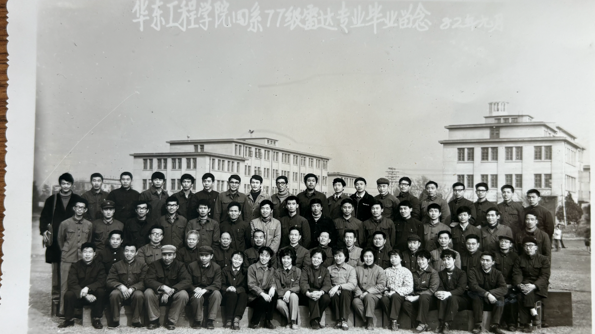

我们的班级
南京理工大学 77-441 雷达专业同学，曾在南京共同学习、成长，结下深厚情谊。

四十四年过去了，属于我们这届 77-441 雷达专业同学的“信号”依然清晰。这是一个用来重聚、回忆、 分享与纪念的页面，献给当年在南京求学的我们。
活动概览
南京理工大学 77-441 雷达专业同学，曾在南京共同学习、成长，结下深厚情谊。
本次聚会纪念毕业 44 周年，致敬 1982 届的青春岁月。
回到记忆中的南京，回味求学时光，畅谈往事，延续珍贵的同窗之情。
母校情怀
南京理工大学 · Nanjing University of Science and Technology
这次聚会页面以母校为情感坐标，把我们 77-441 雷达专业同学共同走过的岁月， 与南京理工大学这段珍贵的校园记忆连接在一起。
时光足迹
课堂上的专注、专业上的探索、校园里的朝夕相处，构成了我们最珍贵的青春记忆。
大家再次相见，分享人生故事，回忆往昔点滴，让沉淀多年的情谊再次升温。
那些一起学到的知识、共同经历的岁月，早已融入我们的事业、家庭与人生道路。
回忆珍藏
那些课堂上的趣事、校园里的点滴，以及曾经影响我们的老师和同学。
毕业照、合影、旧日留影，以及这次 reunion 中新的珍贵瞬间。
让多年未见的同学重新联系，让来自各地的老朋友再次相聚在同一个页面。